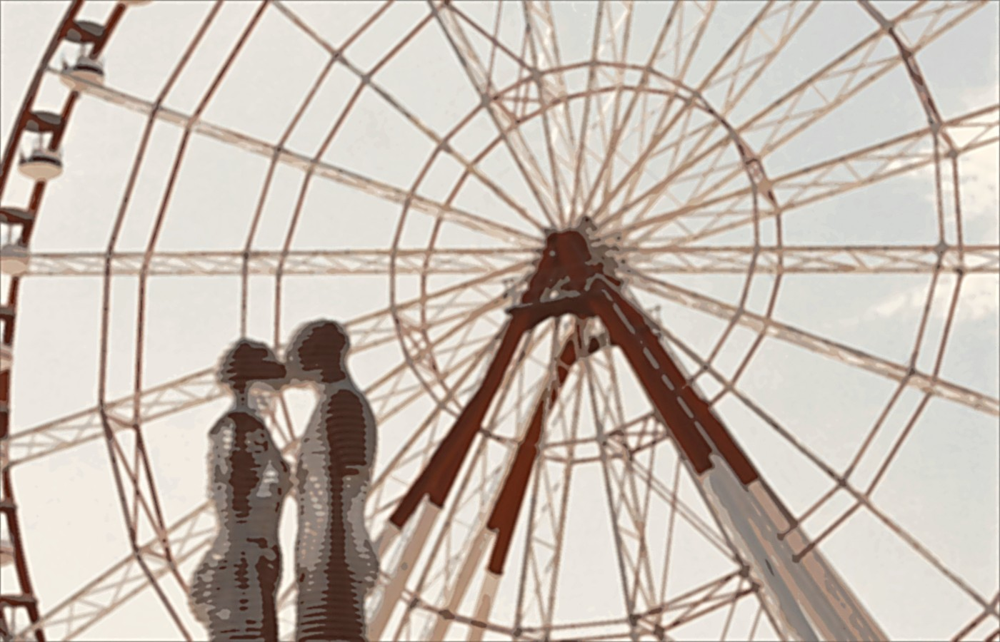
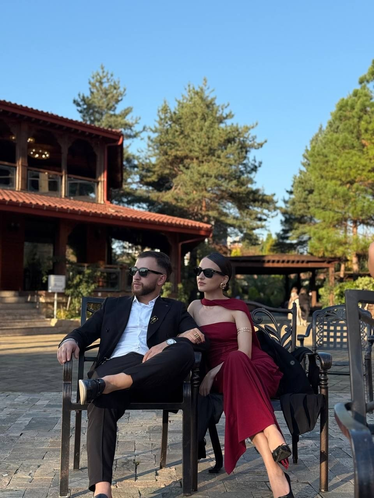
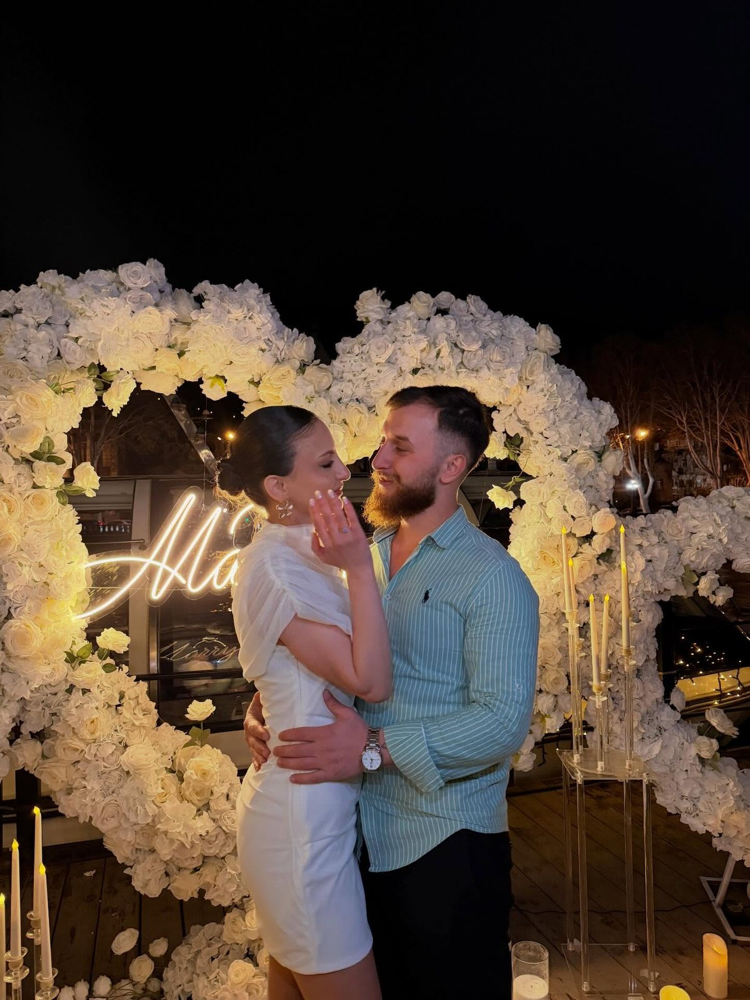
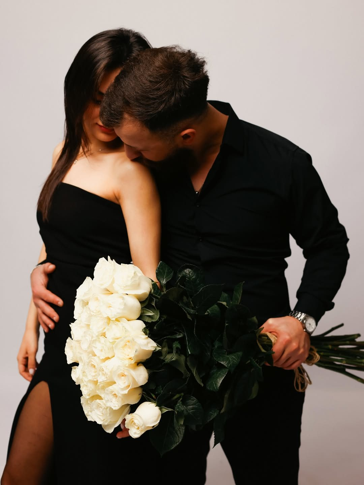
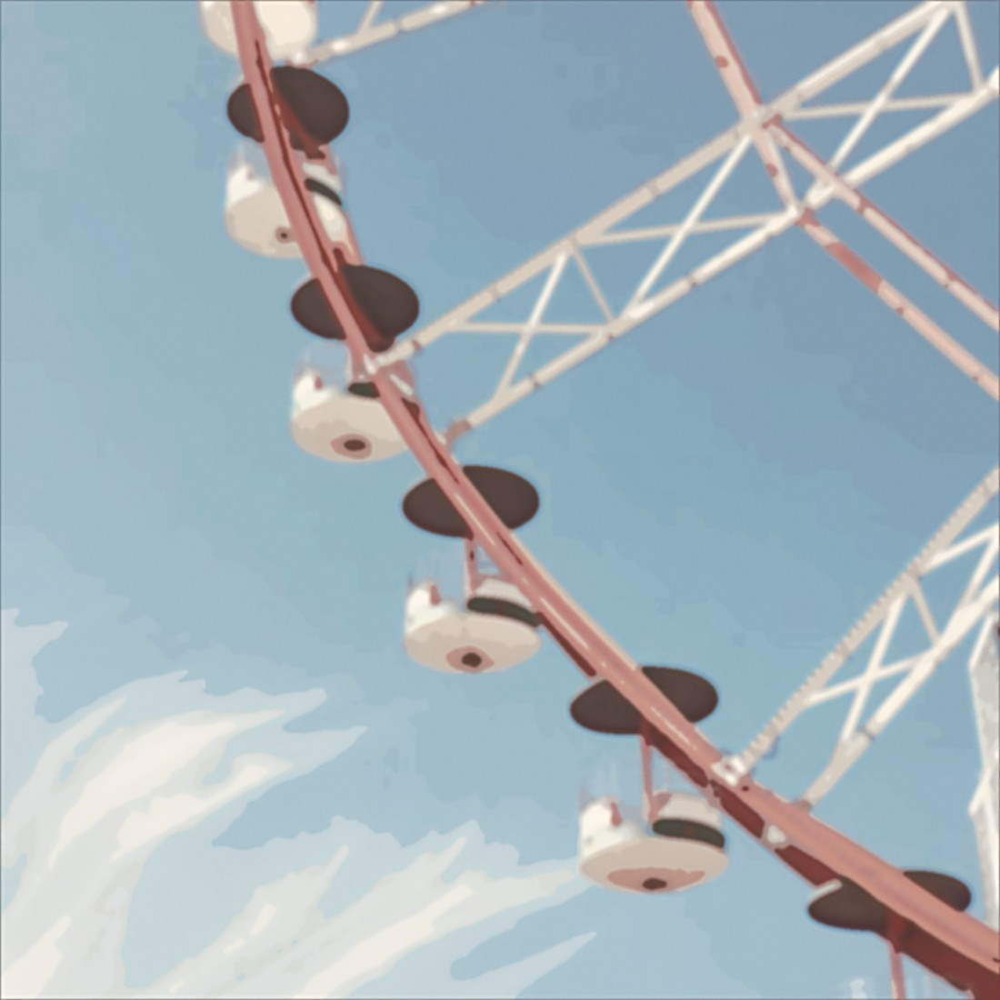
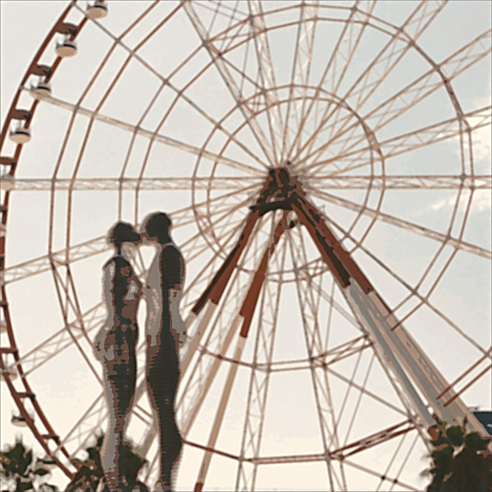

თარიღი
09 ოქტომბერი

იქ, სადაც აჭარული მზის ოქროსფერი სითბო და ზღვის სათუთი სინაზე ერთმანეთს ერწყმის, ჩვენი ცხოვრების ახალი ისტორია იბადება.
სიყვარულით გეპატიჟებით ჩვენს ქორწილში.
გთხოვთ, მობრძანდეთ და ჩვენთან ერთად გაიზიაროთ ეს დღე — სავსე სითბოთი, მეგობრული გარემოთი და იმ დიდი სიყვარულით, რომელიც ერთმანეთთან გვაკავშირებს.
მონიკა&თაზო




საღამოს მშვიდი დასაწყისი, მისალმებები და პირველი სადღეგრძელოები.
სიყვარულის მთავარი სიტყვები და ჩვენი ყველაზე ამაღელვებელი წუთები.
ზღვისპირა კადრები, ღიმილი და მოგონებები, რომლებიც სამუდამოდ დაგვრჩება.
გემრიელი სუფრა, მუსიკა და ბევრი ცეკვა ვარსკვლავიან ცაზე.
ტკბილი ფინალი, სურვილები და კიდევ ერთი ლამაზი მომენტი ერთად.

რუკაზე ნახვამამაკაცები: მუქი საზეიმო კოსტიუმი
ქალბატონები: საღამოს კაბა
Elegant Evening — საღამოს ელეგანტური სტილი. მამაკაცებისთვის მუქი კოსტიუმი, ქალბატონებისთვის საღამოს კაბა.
გთხოვთ, მიუთითოთ სტუმრების ჯამური რაოდენობა RSVP-ში.
დიახ, ადგილზეა უფასო პარკინგი.